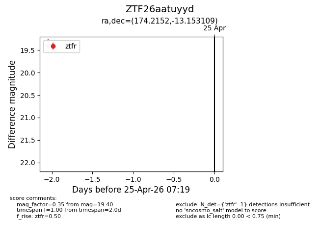
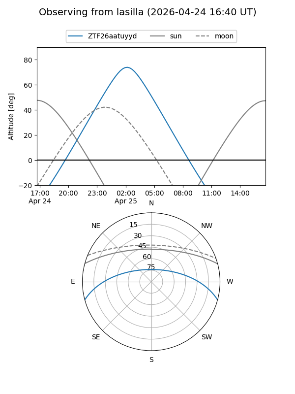
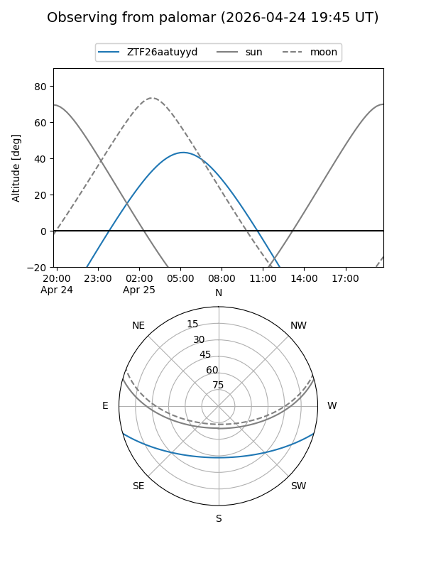

ZTF26aatuyyd
Target ZTF26aatuyyd at 2026-04-25 07:20
Aliases and brokers:
FINK: link
Lasair: link
ALeRCE: link
alt names
ZTF26aatuyyd (ztf,fink_ztf)
Coordinates:
equatorial (ra, dec) = 174.2152,-13.15311
equatorial (HMS+DMS) = 11:36:51.64,-13:09:11.19
galactic (l, b) = (276.3900,+45.84013)
Flags:
Photometry:
last ztfr=19.40
1 ztfr detections
Lightcurve

Visibility


Additional plots